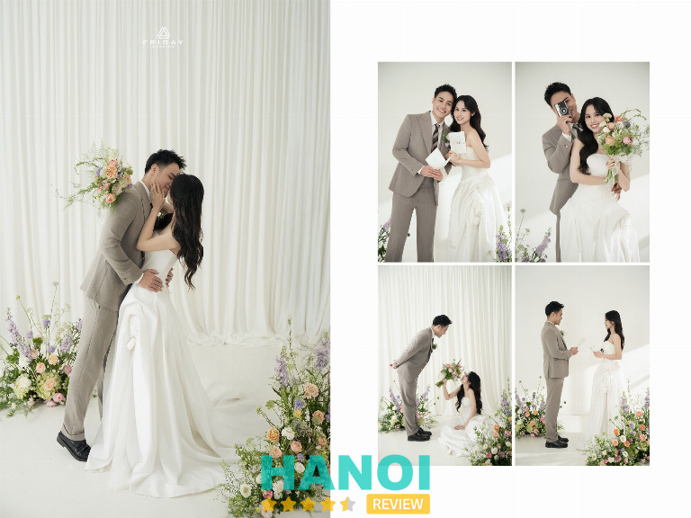
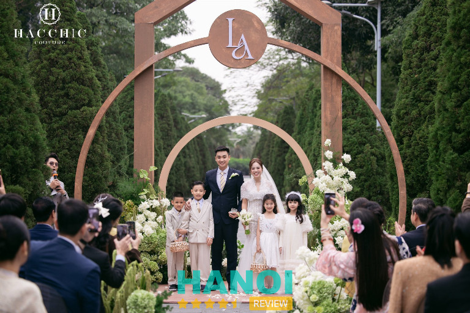
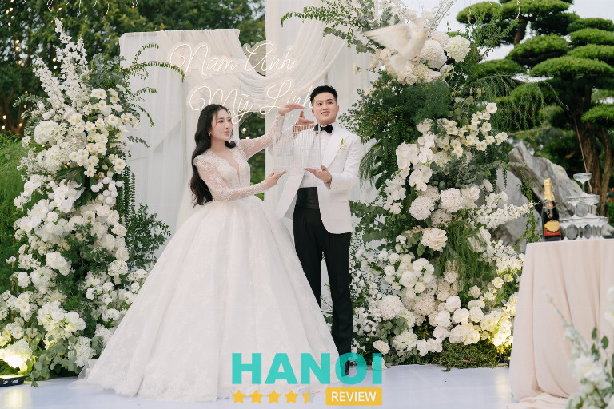

9 Tiệm chụp ảnh cưới ở Hai Bà Trưng chuyên nghiệp giá tốt
Bạn đang tìm kiếm tiệm chụp ảnh cưới ở Hai Bà Trưng để lưu giữ những khoảnh khắc ngọt ngào nhất của cuộc đời mình? Quận Hai Bà Trưng vốn nổi tiếng với những studio nghệ thuật, phong cách đa dạng từ cổ điển đến hiện đại. Việc lựa chọn đúng đơn vị đồng hành sẽ giúp bạn sở hữu bộ album lung linh, phản ánh trọn vẹn tình yêu đôi lứa mà vẫn tối ưu chi phí hiệu quả nhất.
Top 9 Studio chụp ảnh cưới tại Hai Bà Trưng giúp bạn tỏa sáng
Khu vực này tập trung những nghệ sĩ nhiếp ảnh tận tâm, luôn biết cách khai thác góc mặt và cảm xúc tự nhiên của cô dâu chú rể. Các đơn vị tại đây không chỉ cung cấp dịch vụ chụp hình mà còn mang đến trải nghiệm làm đẹp toàn diện, giúp bạn hoàn toàn tự tin và rạng rỡ trong từng khung hình kỷ niệm.
Pixel Photography – 344 Minh Khai
Pixel Photography là tiệm chụp ảnh cưới ở Hai Bà Trưng được nhiều cặp đôi biết đến với phong cách hình ảnh mang màu sắc riêng. Thành lập vào tháng 10/2012, studio theo đuổi sự kết hợp giữa phong cách Rustic mộc mạc, chân thành và cảm giác gần gũi với thiên nhiên, đồng thời hòa quyện cùng tinh thần Á Đông tinh tế. Sự giao thoa này tạo nên những bộ ảnh cưới mang nét dịu dàng, sâu lắng và giàu cảm xúc.
Tại Pixel Photography, ảnh cưới không chỉ dừng lại ở yếu tố tự nhiên trong cách tạo hình mà còn chú trọng cảm xúc thật trong từng khoảnh khắc. Mỗi khung hình hướng đến việc lưu giữ tình yêu theo cách bền vững theo thời gian, để khi xem lại album sau nhiều năm, cảm giác hạnh phúc vẫn còn nguyên vẹn. Giá trị của một bộ ảnh cưới vì thế không nằm ở xu hướng nhất thời mà ở cảm xúc chân thật được lưu giữ lâu dài.
Một số điểm tạo nên dấu ấn riêng của Pixel Photography:
- Phong cách ảnh cưới Rustic kết hợp tinh thần Á Đông tinh tế
- Hình ảnh thiên về cảm xúc tự nhiên và khoảnh khắc chân thật
- Tư duy sáng tạo hướng đến giá trị lâu dài của album cưới
- Tập thể yêu thích du lịch, khám phá và tìm kiếm vẻ đẹp trong từng khung hình
- Sự cẩn trọng và tỉ mỉ trong từng sản phẩm ảnh cưới
Bên cạnh phong cách hình ảnh rõ nét, sự gắn kết giữa các thành viên cũng góp phần tạo nên dấu ấn của Pixel Photography. Niềm yêu thích cái đẹp, tinh thần khám phá và sự chăm chút trong từng bức ảnh giúp mỗi album cưới được hoàn thiện với nhiều cảm xúc.
Đối với các cặp đôi đang tìm kiếm tiệm chụp ảnh cưới ở Hai Bà Trưng mang phong cách tự nhiên, giàu cảm xúc và có dấu ấn nghệ thuật riêng, Pixel Photography là cái tên thường được nhắc đến khi lựa chọn nơi lưu giữ khoảnh khắc hạnh phúc của ngày trọng đại.
Thông tin liên hệ:
- Địa chỉ: 344 Minh Khai, Hai Bà Trưng
- Điện thoại: 0971 199 150
- Email: pixelstudio.vn@gmail.com
- Website: pixelstudio.vn
- Facebook: fb.com/pixelstudiovn
Tuart Wedding – Ngách 22, ngõ 61, Lạc Trung
TuArt Wedding được biết đến như một tiệm chụp ảnh cưới ở Hai Bà Trưng hoạt động theo mô hình All in One, kết hợp nhiều dịch vụ trong lĩnh vực cưới hỏi. Hệ thống bao gồm studio chụp ảnh, học viện đào tạo nghệ thuật, xưởng in, phim trường trong nhà và ngoài trời cùng thương hiệu váy cưới cao cấp.
Mô hình vận hành này tạo nên quy trình thực hiện đồng bộ từ chuẩn bị trang phục, trang điểm cho đến chụp và xử lý hình ảnh. Tại khu vực Hai Bà Trưng, dịch vụ chụp ảnh cưới được cung cấp với mức chi phí phù hợp nhiều nhu cầu khác nhau.
Trong quá trình hoạt động, tiệm chụp ảnh cưới ở Hai Bà Trưng này duy trì phong cách làm việc chuyên nghiệp, tập trung ghi lại khoảnh khắc tự nhiên của các cặp đôi. Hình ảnh được hoàn thiện thông qua hệ thống thiết bị ánh sáng hiện đại kết hợp công nghệ hậu kỳ. Phong cách ảnh đa dạng, bao gồm các concept truyền thống, hiện đại và nhiều cách thể hiện cảm xúc khác nhau.
Các đặc điểm dịch vụ tại TuArt Wedding:
- Hệ sinh thái cưới hỏi trọn gói gồm studio, học viện đào tạo nghệ thuật, xưởng may váy cưới cao cấp và showroom phụ kiện.
- Thiết bị ánh sáng hiện đại kết hợp công nghệ hậu kỳ hỗ trợ hoàn thiện hình ảnh.
- Đội ngũ thực hiện các khâu trang điểm, trang phục và chụp ảnh được đào tạo bài bản.
- Phong cách ảnh đa dạng từ truyền thống đến hiện đại, tập trung cảm xúc tự nhiên của cặp đôi.
- Quy trình tiếp nhận thông tin và tư vấn được thực hiện kỹ lưỡng theo nhu cầu riêng.
Chất lượng hình ảnh và tiến độ bàn giao sản phẩm được duy trì ổn định trong nhiều năm hoạt động. Các cặp đôi đang tìm tiệm chụp ảnh cưới ở Hai Bà Trưng có thể tham khảo những bộ ảnh thực tế và các gói chụp hiện có tại TuArt Wedding để lựa chọn concept phù hợp cho bộ ảnh cưới. Không gian trưng bày váy cưới, phụ kiện và album mẫu tạo điều kiện để quá trình lựa chọn diễn ra rõ ràng hơn trước khi thực hiện bộ ảnh kỷ niệm cho ngày trọng đại.
Thông tin liên hệ:
- Địa chỉ: Toà nhà BT06+07, ngách 22, ngõ 61, Lạc Trung, Hai Bà Trưng
- Điện thoại: 024 2348 3999
- Email: info.tuarts@gmail.com
- Website: tuart.net
- Facebook: fb.com/tuartwedding
Mju Studio – 7 Đại Cồ Việt
Tại khu vực Hai Bà Trưng, Mju Studio mang đến phong cách chụp ảnh cưới trẻ trung, sáng tạo, tập trung vào việc ghi lại những khoảnh khắc hạnh phúc tự nhiên. Quá trình thực hiện bộ ảnh được tổ chức như một buổi dạo chơi thoải mái, giúp cô dâu và chú rể thể hiện những cung bậc cảm xúc chân thực và tình tứ.
Dịch vụ tại đây sở hữu những đặc điểm nổi bật sau:
- Ý tưởng độc đáo: Đội ngũ nhân sự trẻ trung, năng động, thường xuyên cập nhật các xu hướng mới để hiện thực hóa những ý tưởng riêng biệt cho từng album.
- Bối cảnh đa dạng: Các không gian chụp ảnh được xây dựng theo hướng lãng mạn, hỗ trợ tạo nên những khung hình đặc biệt cho câu chuyện tình yêu.
- Trang phục thiết kế: Studio sở hữu thương hiệu váy cưới thiết kế độc quyền Fairytale Bridal với các mẫu mã phù hợp cho nhiều kiểu dáng người.
- Trải nghiệm dịch vụ: Bên cạnh việc cung cấp hình ảnh, đơn vị này còn chú trọng vào quy trình phục vụ để mang lại sự hài lòng cho khách hàng.
Sự kết hợp giữa phong cách chụp ảnh tự nhiên và trang phục độc quyền giúp các cặp đôi lưu giữ được những kỷ niệm ngọt ngào qua những thước phim và khung hình cưới đẹp mắt. Việc lựa chọn trải nghiệm tại đây sẽ giúp các ý tưởng trong mơ về một album cưới đặc biệt trở thành hiện thực. Hãy liên hệ với Mju Studio để bắt đầu hành trình ghi lại câu chuyện tình yêu bằng những thước ảnh giàu cảm xúc.
Thông tin liên hệ:
- Địa chỉ: 7 Đại Cồ Việt, Hai Bà Trưng
- Điện thoại: 084.8686.678
- Email: mju.studio01@gmail.com
- Website: mjustudio.com
- Facebook: fb.com/Mju.Studio
MR.LEE Studio – BT08, 310 Minh Khai
Kết hôn là dấu mốc quan trọng trong cuộc đời, nơi những năm tháng thanh xuân đẹp nhất được lưu giữ bằng hình ảnh và cảm xúc. Nhiều cặp đôi mong muốn từng ánh mắt, nụ cười hay cái nắm tay trong ngày trọng đại vẫn còn nguyên vẹn theo thời gian.
Mr. Lee Studio được biết đến như một tiệm chụp ảnh cưới ở Ha Bà Trưng, Hà Nội ghi lại những khoảnh khắc tự nhiên và giàu cảm xúc. Mỗi khung hình không đơn thuần là bức ảnh, mà giống như những thước phim giúp lưu giữ kỷ niệm của ngày đặc biệt.
Trong nhiều năm hoạt động, Mr. Lee Studio nhận được sự lựa chọn của hàng nghìn cặp đôi khi tìm kiếm tiệm chụp ảnh cưới ở Ha Bà Trưng, Hà Nội. Phong cách làm việc hướng đến việc ghi lại cảm xúc chân thật, hạn chế sự sắp đặt cứng nhắc để khoảnh khắc trở nên tự nhiên.
Đội ngũ make-up artist am hiểu đường nét gương mặt, bắt kịp xu hướng trang điểm cưới hiện đại và tạo nên diện mạo hài hòa với concept chụp ảnh. Bên cạnh đó là sự hợp tác cùng các nhà thiết kế váy cưới tại Việt Nam, góp phần mang lại hình ảnh chỉn chu và ấn tượng cho từng bộ ảnh.
Một số điểm được nhiều cặp đôi quan tâm khi lựa chọn studio:
- Ekip chụp ảnh, quay phim và hậu kỳ hoạt động đồng bộ
- Phong cách ghi lại khoảnh khắc tự nhiên, giàu cảm xúc
- Trang điểm theo xu hướng cưới hiện đại
- Sự chuẩn bị kỹ lưỡng cho từng bộ ảnh
Không gian làm việc chuyên nghiệp cùng sự chuẩn bị chỉn chu trong từng công đoạn giúp Mr. Lee Studio trở thành lựa chọn quen thuộc của nhiều cặp đôi khi tìm kiếm tiệm chụp ảnh cưới ở Ha Bà Trưng, Hà Nội để lưu giữ những khoảnh khắc ý nghĩa của ngày cưới.
Thông tin liên hệ:
- Địa chỉ: BT08, 310 Minh Khai, Hai Bà Trưng
- Điện thoại: 0523 458 910
- Email: mrleestudio.quanly@gmail.com
- Facebook: fb.com/mrleestudio
AMORY Studio – 34 Hòa Mã
AMORY Studio là studio chụp ảnh cưới ở Hai Bà Trưng, Hà Nội được nhiều cặp đôi lựa chọn khi tìm kiếm địa điểm thực hiện bộ ảnh cưới mang phong cách nhẹ nhàng và giàu cảm xúc. Không gian chụp được đầu tư về ánh sáng, bối cảnh và cách sắp đặt nhằm tạo nên những khung hình hài hòa, giúp lưu giữ khoảnh khắc tự nhiên của cô dâu chú rể trong từng tấm ảnh.
Phong cách hình ảnh tại đây thiên về sự tinh tế và trong trẻo. Màu sắc ảnh được xử lý mềm mại, tạo cảm giác lãng mạn và gần gũi. Nhờ định hướng rõ ràng trong cách xây dựng concept, AMORY Studio dần trở thành studio chụp ảnh cưới ở Hai Bà Trưng, Hà Nội được nhiều cặp đôi tìm hiểu khi chuẩn bị cho bộ ảnh kỷ niệm trước ngày cưới.
Các concept chụp ảnh được thiết kế đa dạng, phù hợp với nhiều phong cách khác nhau như hiện đại, tối giản hoặc lãng mạn. Bối cảnh được chuẩn bị phù hợp với từng chủ đề để tạo nên sự thống nhất trong tổng thể bộ ảnh. Bên cạnh đó, trang phục cưới và phụ kiện được lựa chọn theo từng concept nhằm giúp hình ảnh cô dâu chú rể trở nên nổi bật và hài hòa trong khung hình.
Một số điểm được nhiều khách hàng nhắc đến khi lựa chọn AMORY Studio:
- Phong cách ảnh cưới tự nhiên, chú trọng cảm xúc của cặp đôi
- Nhiều concept chụp ảnh được xây dựng theo xu hướng ảnh cưới hiện đại
- Váy cưới và phụ kiện đa dạng cho nhiều phong cách khác nhau
- Dịch vụ trang điểm và làm tóc được chuẩn bị theo từng concept chụp
Với sự đầu tư về phong cách hình ảnh, bối cảnh chụp và cách xây dựng concept rõ ràng, AMORY Studio trở thành một trong những studio chụp ảnh cưới ở Hai Bà Trưng, Hà Nội được nhiều cặp đôi cân nhắc khi lựa chọn nơi thực hiện bộ ảnh cưới mang dấu ấn riêng.
Thông tin liên hệ:
- Địa chỉ: 34 Hòa Mã, Hai Bà Trưng
- Điện thoại: 0375 658 858
- Website: amorystudio.com
- Facebook: fb.com/AMORYstudio
Friday Wedding – Số 1 Đỗ Hành
Friday Wedding là tiệm chụp ảnh cưới ở Hai Bà Trưng được nhiều cặp đôi quan tâm khi tìm kiếm địa điểm lưu giữ khoảnh khắc trước ngày cưới. Phong cách chụp ảnh tại đây hướng đến sự nhẹ nhàng, hiện đại và chú trọng vào cảm xúc tự nhiên của cô dâu – chú rể. Mỗi bộ ảnh được thực hiện theo concept rõ ràng, giúp tái hiện câu chuyện tình yêu theo cách riêng của từng cặp đôi.

Không gian làm việc được chuẩn bị gọn gàng, phục vụ cho quá trình tư vấn và lựa chọn phong cách chụp. Trang phục cưới được cập nhật với nhiều kiểu dáng khác nhau, từ váy cưới thanh lịch đến những thiết kế mang hơi hướng trẻ trung. Nhờ đó, các cặp đôi dễ dàng lựa chọn trang phục phù hợp với concept và phong cách cá nhân.
Friday Wedding cũng được nhắc đến với quy trình chụp ảnh được sắp xếp khá rõ ràng, giúp buổi chụp diễn ra thuận lợi và tiết kiệm thời gian. Một số điểm thường được khách hàng quan tâm khi tìm hiểu về tiệm gồm:
- Concept chụp ảnh đa dạng từ trong studio đến ngoại cảnh
- Trang phục cưới với nhiều mẫu váy và phụ kiện đi kèm
- Đội ngũ chụp ảnh hỗ trợ tạo dáng và ghi lại khoảnh khắc tự nhiên
- Album cưới được thiết kế theo nhiều phong cách khác nhau
Nhờ sự chỉn chu trong từng khâu thực hiện, Friday Wedding trở thành lựa chọn được nhiều cặp đôi tìm hiểu khi cần chụp ảnh cưới tại khu vực Hai Bà Trưng. Những ai đang lên kế hoạch cho bộ ảnh kỷ niệm trước ngày cưới có thể tham khảo thêm thông tin, xem các mẫu ảnh thực tế và liên hệ trực tiếp để đặt lịch chụp phù hợp.
Thông tin liên hệ:
- Địa chỉ: Số 1 Đỗ Hành, Nguyễn Du, Hai Bà Trưng
- Điện thoại: 0962 225 772
- Email: fridaywedding.vn@gmail.com
- Website: fridaywedding.vn
- Facebook: fb.com/Fridaywedding.vn
Hacchic Couture – 27 Mai Hắc Đế
Hacchic Couture là một trong những studio chụp ảnh cưới ở Hai Bà Trưng hoạt động trong lĩnh vực cưới hỏi và chụp ảnh cưới tại Hà Nội. Qua thời gian hoạt động, Hacchic Couture từng bước xây dựng hình ảnh chuyên nghiệp trong dịch vụ chụp ảnh cưới, mang đến nhiều bộ ảnh mang dấu ấn riêng. Sự kết hợp giữa đam mê, sáng tạo và phong cách làm việc chuyên nghiệp giúp Hacchic Couture tạo được sự quan tâm của nhiều cặp đôi đang tìm kiếm địa điểm lưu giữ khoảnh khắc trọng đại.

Phong cách ảnh cưới tại Hacchic Couture hướng đến sự hài hòa giữa nét trang trọng và vẻ đẹp tự nhiên. Hình ảnh thể hiện sự kiêu sa, dịu dàng nhưng vẫn giữ được cảm xúc chân thật và sự thoải mái trong từng khung hình. Nhiều cặp đôi lựa chọn studio chụp ảnh cưới ở Hai Bà Trưng này bởi phong cách chụp nhẹ nhàng, không gò bó, giúp những khoảnh khắc trở nên tự nhiên và giàu cảm xúc.
Một số điểm nổi bật tại Hacchic Couture:
- Đội ngũ chụp hình, trang điểm và làm tóc hoạt động trong lĩnh vực cưới hỏi tại Hà Nội
- Phong cách phục vụ thân thiện, tạo tâm lý thoải mái trong quá trình chụp ảnh
- Showroom được thiết kế với không gian sang trọng, tạo cảm giác dễ chịu khi lựa chọn dịch vụ
- Trang thiết bị và cơ sở vật chất phục vụ chụp ảnh cưới đầy đủ
- Đội ngũ kỹ thuật viên phụ trách makeup, tạo dáng, chụp ảnh và thiết kế album
- Luôn cập nhật xu hướng mới, phát triển ý tưởng sáng tạo cho từng bộ ảnh
Bên cạnh đó, quá trình thực hiện album được thực hiện bởi đội ngũ kỹ thuật viên chuyên về makeup, tạo dáng, chụp ảnh và thiết kế album cưới. Sự kết hợp giữa kỹ thuật, ý tưởng sáng tạo và phong cách riêng giúp mỗi bộ ảnh cưới mang dấu ấn khác biệt. Album cưới được chăm chút từ hình ảnh đến thiết kế, tạo nên những bộ ảnh ấn tượng và mang tính kỷ niệm lâu dài.
Nếu đang tìm kiếm studio chụp ảnh cưới ở Hai Bà Trưng với phong cách trang trọng, tinh tế và mang đậm dấu ấn riêng, Hacchic Couture là cái tên thường được nhắc đến trong danh sách lựa chọn của nhiều cặp đôi tại Hà Nội. Liên hệ trực tiếp Hacchic Couture để tìm hiểu thêm về phong cách chụp ảnh cưới và lựa chọn gói chụp phù hợp cho ngày trọng đại.
Thông tin liên hệ:
- Địa chỉ: 27 Mai Hắc Đế, Hai Bà Trưng
- Điện thoại: 0795 001 533
- Email: hacchiccouture@gmail.com
- Facebook: fb.com/hacchiccouture
Toni Studio – 61 Mai Hắc Đế
Mùa cưới là thời điểm nhiều cặp đôi tìm kiếm một nơi phù hợp để lưu giữ những khoảnh khắc hạnh phúc. Tại khu vực Hai Bà Trưng, Hà Nội, Toniart Studio được nhiều người biết đến với dịch vụ chụp ảnh cưới ngoại cảnh và chụp ảnh cưới trong studio. Phong cách hình ảnh hướng đến sự mới mẻ, độc đáo, tạo nên những bộ ảnh mang dấu ấn riêng cho từng cặp đôi.

Đội ngũ ekip chụp ảnh của Toniart Studio nhận được nhiều đánh giá tích cực từ khách hàng nhờ sự chuyên nghiệp và thái độ làm việc nhiệt tình. Các ý tưởng chụp ảnh được xây dựng theo nhiều phong cách khác nhau, mang lại cảm giác tự nhiên và cảm xúc chân thật trong từng khung hình.
Một số điểm nổi bật tại Toniart Studio:
- Dịch vụ chụp ảnh cưới ngoại cảnh và chụp ảnh cưới tại studio
- Phong cách hình ảnh độc đáo, mang màu sắc riêng
- Ekip chụp ảnh chuyên nghiệp, nhiệt tình trong quá trình làm việc
- Ý tưởng chụp ảnh đa dạng, tạo nên nhiều khung hình sáng tạo
Với phong cách phục vụ chú trọng đến từng chi tiết nhỏ, Toniart Studio hướng đến việc lưu giữ những khoảnh khắc tinh tế, nhẹ nhàng và tự nhiên trong từng bộ ảnh cưới. Những khung hình được xây dựng như một câu chuyện tình yêu được ghi lại bằng hình ảnh, giúp các cặp đôi lưu giữ trọn vẹn kỷ niệm của ngày trọng đại.
Thông tin liên hệ:
- Địa chỉ: 61 Mai Hắc Đế, Hai Bà Trưng
- Điện thoại: 0968 571 688
- Email: tonistudio.mark@gmail.com
- Facebook.com/ToniStudio88
JEJU Wedding – 105 Minh Khai
JEJU Wedding là đơn vị chuyên cung cấp dịch vụ ảnh cưới mang đậm hơi hướng Hàn Quốc, tọa lạc tại quận Hai Bà Trưng. Thương hiệu này tập trung vào sự tối giản, tinh tế, ưu tiên những khoảnh khắc tự nhiên thay vì cách tạo dáng cứng nhắc. Ánh sáng trong các khung hình thường được xử lý theo tông màu trong trẻo, nhẹ nhàng, tạo cảm giác lãng mạn và bền vững theo thời gian.
Dịch vụ tại đây tập trung vào việc hỗ trợ khách hàng trong suốt quá trình thực hiện bộ ảnh. Các gói chụp bao gồm trang điểm, trang phục và hậu kỳ kỹ lưỡng. Đội ngũ nhân viên thực hiện việc tư vấn dựa trên mong muốn cụ thể của từng cặp đôi để lựa chọn bối cảnh phù hợp.
Các đặc điểm nổi bật về dịch vụ và sản phẩm:
- Hệ thống váy cưới và vest được cập nhật theo xu hướng thời trang cưới hiện đại, form dáng đa dạng.
- Phong cách trang điểm tập trung vào lớp nền mỏng nhẹ, tôn vinh những đường nét tự nhiên trên khuôn mặt.
- Phòng chụp được thiết kế với nhiều bối cảnh khác nhau, từ phông nền trơn đến các tiểu cảnh sắp đặt tỉ mỉ.
- Quy trình làm việc có sự phối hợp giữa thợ chụp ảnh và bộ phận chỉnh sửa hình ảnh để đạt được độ đồng nhất về màu sắc.
- Sản phẩm album cưới sử dụng chất liệu in ấn cao cấp, hỗ trợ lưu giữ hình ảnh lâu dài.
Việc lựa chọn một đơn vị thực hiện bộ ảnh kỷ niệm quan trọng đòi hỏi sự cân nhắc kỹ lưỡng về phong cách thẩm mỹ và chất lượng phục vụ thực tế. Các cặp đôi đang tìm kiếm sự nhẹ nhàng, thanh lịch theo chuẩn mực ảnh cưới xứ sở Kim Chi có thể trực tiếp ghé thăm cửa hàng tại quận Hai Bà Trưng để xem mẫu ảnh thực tế. Hãy liên hệ ngay để nhận tư vấn chi tiết về các gói chụp phù hợp với nhu cầu riêng biệt.
Thông tin liên hệ:
- Địa chỉ: 105 Minh Khai, Hai Bà Trưng
- Điện thoại: 0888 696 960
- Website: jejuwedding.vn
- Facebook: fb.com/jejuwedding.vn
Tiêu chí chọn tiệm chụp ảnh cưới ở Hai Bà Trưng
Để sở hữu album hình cưới như ý, bạn cần đánh giá kỹ lưỡng các đơn vị dựa trên những tiêu chuẩn khắt khe về chất lượng và dịch vụ.
- Phong cách nhiếp ảnh: Hãy chọn studio có gu màu sắc và cách bắt trọn khoảnh khắc phù hợp với sở thích cá nhân của cả hai bạn.
- Chất lượng váy cưới: Một tiệm uy tín thường sở hữu bộ sưu tập váy cưới đa dạng, form dáng chuẩn và luôn cập nhật xu hướng thời trang mới.
- Đội ngũ chuyên viên: Nhiếp ảnh gia và thợ trang điểm cần có tay nghề cao, thái độ nhiệt tình để tạo tâm lý thoải mái cho cặp đôi.
- Gói giá công khai: Các chi phí cần được liệt kê rõ ràng, minh bạch ngay từ đầu để tránh phát sinh những khoản tiền không mong muốn sau này.
- Phản hồi khách hàng: Bạn nên tham khảo các đánh giá thực tế từ những cặp đôi đã sử dụng dịch vụ để có cái nhìn khách quan nhất.
- Thiết bị kỹ thuật: Studio hiện đại cần đầu tư máy móc và hệ thống ánh sáng chuyên dụng nhằm đảm bảo độ sắc nét cho từng file ảnh gốc.
- Dịch vụ hậu kỳ: Quy trình chỉnh sửa ảnh phải tinh tế, giữ được nét tự nhiên của nhân vật thay vì can thiệp quá đà làm mất chất.
Việc tìm kiếm tiệm chụp ảnh cưới ở Hai Bà Trưng phù hợp chính là chìa khóa giúp bạn lưu giữ kỷ niệm hạnh phúc một cách trọn vẹn. Hy vọng những tiêu chí và gợi ý trên đã cung cấp thông tin hữu ích cho hành trình chuẩn bị hôn lễ. Hãy liên hệ ngay với studio bạn ưng ý nhất để nhận tư vấn chi tiết và sở hữu bộ album cưới độc bản, đầy cảm xúc cho ngày trọng đại.
Có thể bạn quan tâm
- 5 Salon làm tóc tại Q. Hai Bà Trưng cắt, tạo kiểu đẹp nhất
- 5 Công ty dịch thuật ở Hai Bà Trưng uy tín, chuẩn xác
- 5 Trung tâm tiếng Anh tại Q. Hai Bà Trưng uy tín, nhiều khóa học
- 5 Dịch vụ sửa chữa điện lạnh tại quận Hai Bà Trưng uy tín, giá rẻ
DOANH NGHIỆP: Đăng tải thông tin MIỄN PHÍ.
Tin đọc nhiều


3 Công ty dịch thuật ở Từ Liêm uy tín, chính xác
Tìm kiếm một công ty dịch thuật ở Từ Liêm chuyên nghiệp là bước đệm quan trọng giúp cá nhân và doanh nghiệp vượt qua...
5 Dịch vụ tắm bé tại nhà ở Q. Cầu Giấy uy tín, chuyên nghiệp
Các dịch vụ tắm bé tại nhà ở Quận Cầu Giấy giúp các bậc phụ huynh yên tâm hơn trong hành trình chăm sóc bé...

5 Đơn vị lắp đặt điện mặt trời tại Hà Nội uy tín, chất lượng...
Những đơn vị lắp đặt điện mặt trời tại Hà Nội đang trở thành lựa chọn hàng đầu của nhiều hộ gia đình và doanh...
4 Tiệm chụp ảnh cưới ở Tây Hồ giúp bạn sở hữu bộ hình lung...
Khu vực ven hồ luôn là địa điểm lý tưởng để các cặp đôi ghi lại khoảnh khắc hạnh phúc trăm năm của mình. Việc...

Trở thành người đầu tiên bình luận cho bài viết này!